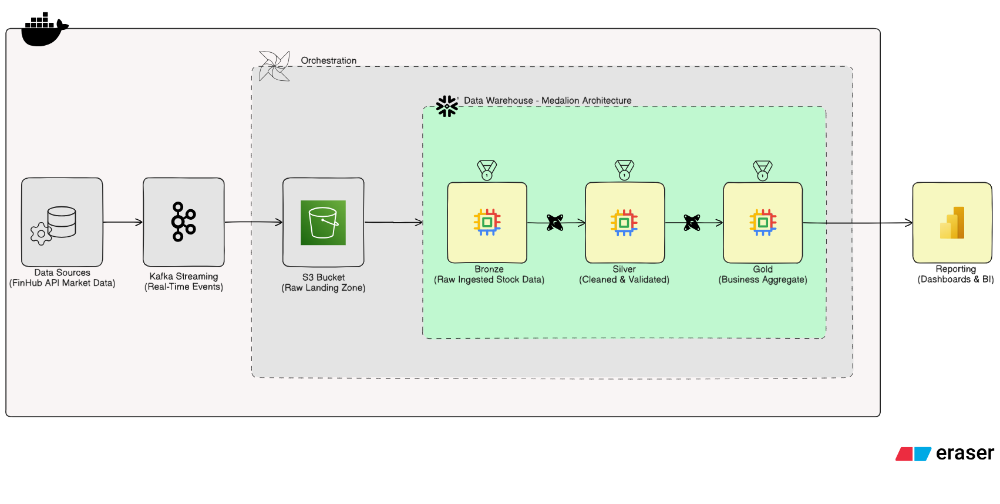

Stock Market Data Streaming
Finnhub, Kafka, MinIO, Snowflake, dbt, Airflow & Power BI
A complete data path that streams Finnhub stock quotes through Kafka, stages records in S3-compatible object storage, and prepares curated Snowflake datasets for Power BI.
Project background
Stock quotes are useful for analysis when they can be collected continuously, retained as raw records, and shaped into datasets ready for reporting. This project connects event streaming, object storage, orchestration, warehouse loading, data modeling, and business intelligence in one workflow.
Project objectives
- Retrieve stock market quotes from the Finnhub API.
- Stream quote messages through Kafka and stage raw JSON in MinIO.
- Load staged records into Snowflake using an Airflow-managed workflow.
- Transform warehouse data through bronze, silver, and gold layers with dbt.
- Publish curated gold-layer datasets for Power BI reporting.
Architecture and data flow
A streaming producer and consumer handle quote collection and staging. Airflow schedules the staged-data load into Snowflake; dbt builds the medallion layers, and Power BI connects to the curated gold data.

How the pipeline works
Each part of the project moves quote data toward an analytics-ready reporting layer.
-
Collect quotes
A producer requests quote data from Finnhub for configured stock symbols.
-
Stream events
Quote messages are published to the
stock-quotesKafka topic. -
Stage raw records
A consumer writes the JSON messages into an S3-compatible bucket, using MinIO for object storage.
-
Orchestrate the load
Airflow schedules the staged-file download and Snowflake loading tasks.
-
Model warehouse data
dbt organizes warehouse transformations into bronze, silver, and gold layers.
-
Prepare reporting
Power BI connects to gold-layer datasets for visual analysis and reporting.